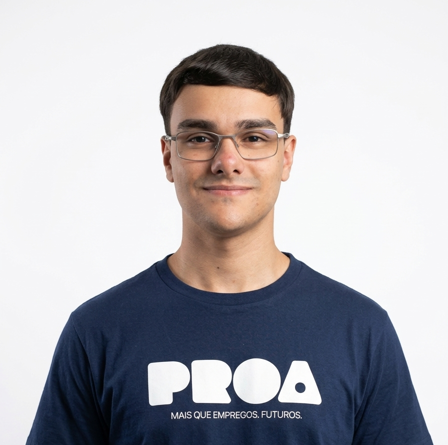

Prazer em Conhecer
Olá, eu sou o Gabriel! Tenho 19 anos, sou natural de São Paulo e atuo como Desenvolvedor Full-Stack no projeto BusSense, uma plataforma de acessibilidade na locomoção urbana voltada para pessoas com deficiência visual, com monitoramento de ônibus em tempo real e alertas táteis de aproximação. Paralelamente, me aprofundo em Cloud com AWS pela DIO e inicio minha graduação em Engenharia da Computação pela UNIVESP no dia 22 de junho. Corro atrás dos meus objetivos com foco e independência, e meu maior propósito é construir uma carreira sólida em tecnologia para dar uma vida melhor à minha mãe, que me criou praticamente sozinha e é minha maior motivação.
Baixar meu CV
Mapa de Carreira
Desenvolvedor Full-Stack (Júnior):
Quando conquistar minha primeira oportunidade como Estagiário ou Desenvolvedor Júnior, estarei dando o passo inicial definitivo da minha jornada profissional em tecnologia. Quero aplicar na prática meus conhecimentos em HTML, CSS, JavaScript, React, Python e MySQL, contribuindo para projetos reais e absorvendo ao máximo a experiência do ambiente corporativo. Já tenho uma base prática relevante: atuo como Desenvolvedor Full-Stack no projeto BusSense, o que me proporciona vivência real com desenvolvimento web acessível, colaboração em equipe e entrega de soluções para usuários reais. Meu foco é evoluir rápido, aprender com profissionais experientes e consolidar minha stack Full-Stack.
Soft Skills exigidas para essa carreira:
- Comunicação clara e colaboração eficaz em equipe.
- Vontade intensa de aprender e crescer continuamente.
- Capacidade de trabalhar sob supervisão e absorver feedbacks.
- Resolução de problemas proativa e raciocínio lógico aplicado
Roadmap de Aprendizado:
- Python (Flask / Django)
- React.js avançado
- APIs REST
- MySQL otimizado
- Git Workflow
- AWS Fundamentos
- Depuração e Teste de código
Desenvolvedor Full-Stack (Pleno)
Ao alcançar o cargo de Desenvolvedor Full-Stack Pleno, estarei assumindo projetos mais complexos com maior autonomia, entregando soluções robustas e escaláveis tanto no front quanto no back-end. É nesta etapa que aprofundo meu domínio em cloud com AWS, integrando serviços como Lambda, S3 e RDS ao ciclo de desenvolvimento. Também inicio práticas de DevOps, containerização com Docker e começo a mentorear desenvolvedores juniores. Meu objetivo é consolidar uma visão arquitetural sólida e me posicionar como referência técnica no time.
Soft Skills exigidas para essa carreira:
- Visão analítica para identificar gargalos e propor melhorias em sistemas.
- Mentoria e facilidade para compartilhar conhecimento com colegas juniores.
- Adaptabilidade para integrar novas tecnologias ao ciclo de desenvolvimento.
- Resolução de problemas complexos com foco em performance e escalabilidade.
Roadmap de Aprendizado:
- TypeScript
- Next.js
- Node.js
- Docker
- PostgreSQL
- AWS (Lambda, S3, RDS)
- CI/CD
- Testes de segurança em aplicações (SAST e DAST)
- Testes automatizados
Desenvolvedor Full-Stack (Sênior):
Como Desenvolvedor Full-Stack Sênior, serei uma referência técnica reconhecida. Liderarei decisões de arquitetura de software, garantindo soluções de alto desempenho, segurança e baixo custo operacional. Atuarei como ponto de convergência entre produto, negócio e engenharia, orientando o time em boas práticas, revisões de código e definição de padrões técnicos. Nesta fase, terei domínio avançado de cloud com AWS e estarei preparado para a transição para cargos acima de Sênior que envolvam arquitetura de sistemas em larga escala.
Soft Skills exigidas para essa carreira:
- Visão estratégica para alinhar decisões técnicas com os objetivos do negócio.
- Comunicação efetiva com stakeholders técnicos e não-técnicos.
- Liderança técnica e mentoramento de times multidisciplinares.
- Capacidade de solucionar problemas complexos de forma criativa e eficiente.
Roadmap de Aprendizado:
- Microsserviços
- Kubernetes
- Arquitetura de Software
- AWS Advanced (EKS, CloudFront)
- Bancos de Dados NoSQL
- Bancos de Dados Graph
- Segurança Cibernética
- Observabilidade e Monitoramento
Arquiteto de Soluções em Nuvem (Cloud Solutions Architect):
O cargo de Arquiteto de Soluções em Nuvem representa o topo da minha visão de longo prazo: um papel acima de Sênior, com alta remuneração, que combina código, cloud e liderança técnica estratégica. Nessa posição, serei responsável por projetar a arquitetura de sistemas completos em nuvem, definindo como os componentes de software, infraestrutura, dados e segurança se conectam para atender às necessidades do negócio com escalabilidade e eficiência de custo. Trabalharei diretamente com C-level e líderes de produto, sendo o elo entre a visão de negócio e a execução técnica. Com base no meu histórico em desenvolvimento Full-Stack e AWS, este é o caminho natural de evolução que une tudo que construí ao longo da carreira.
Soft Skills exigidas para essa carreira:
- Pensamento estratégico e visão de longo prazo sobre sistemas e negócio.
- Comunicação executiva: apresentar arquiteturas complexas para públicos não-técnicos.
- Liderança transversal de times de engenharia em múltiplos projetos simultâneos.
- Capacidade de tomar decisões de alto impacto sob pressão e incerteza.
Roadmap de Aprendizado:
- AWS Certified Solutions Architect
- Terraform / IaC
- Multi-cloud (Azure / GCP)
- Serverless Architecture
- Otimização de Custos em Nuvem
- Well-Architected Framework
Soft e Hard Skills
Afinidade com as seguintes tecnologias e técnicas:
BackEnd
-
Python
-
Java
-
C#
-
SQL
-
AWS / EC2
Frontend
-
HTML & CSS
-
React
-
JavaScript
-
Figma / UI/UX
-
Prototipagem
Soft Skills
- Trabalho em Equipe
- Adaptabilidade
- Comunicação Efetiva
- Resiliência
- Autoaprendizagem
- Resolução de Problemas
- Pensamento Analítico
- Gestão do Tempo
- Empatia
Outras
- Git
- Github
- AWS EC2
- Figma
- Canva
- Power BI
- Wireframing
- Algoritmos
- Code Review
- DevOps
- Gestão de projetos
Idiomas
- Português (Nativo)
- Inglês (Intermediário)